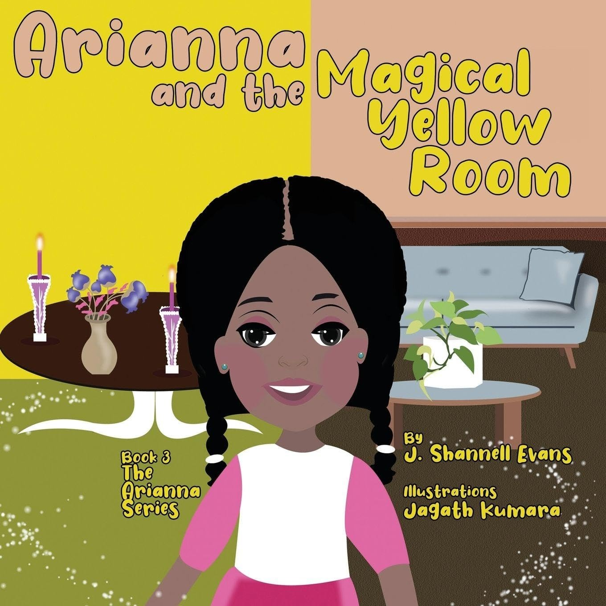

New edition · August 2026
The rebranded edition
New cover and added features · ISBN-10 9769803413
Rebranded edition Released August 2026
J. Shannell Evans’s forty-day devotional returns with a fresh look and added features. Each day invites you to reflect on God’s character and love, and to know Him personally.
Reading the devotional
Evans wrote the devotional for personal reflection, growth, discipleship and encouragement. It turns to God’s attributes and His love, and to how each reader can know Him personally and find peace and joy in His presence.
New edition · August 2026
New cover and added features · ISBN-10 9769803413
Original covers, listed for readers who prefer them.

2011 · ISBN 9781465395672
ISBN 9781465395665

2019 ebook · ISBN 9781733289610
Her mother recited the work of poets including Robert Frost, Henry Wadsworth Longfellow and Alfred Tennyson.

Mystery, memoir and biography
Caregiver memoir
My Family’s Journey With Dementia
Evans follows dementia across generations of her family and writes about what it means to care for someone you love.
Memoir listing at ThriftBooks Hear Evans on caregivingFamily mystery
After Caroline’s unexplained death, her daughter Virginia looks for answers with the help of her husband, Jack, and brother, Luke.
Biography
The life of Thomas A.E. Evans, K.C., from an ambition he formed as a boy to the obstacles he overcame to realize it.
Children’s books
Start with a wish that comes true, then follow Arianna through the case of the missing pizza and a secret passage.

Book 1
A wish comes true and changes how Arianna sees what she already has.
Book 1 at Wingdon
Book 2
A pretend pizza party turns into a real case of missing food.
Book 2 at Wingdon
Book 3
With the town staying home, Arianna and Sally discover a secret passage.
Book 3 at Wingdon
Credited to J. Shannell Evans and Tristan Thompson.
Evans publishes her own work and works with other writers. Her publishing credits include Golden Wood by Dr. Harris Evans.